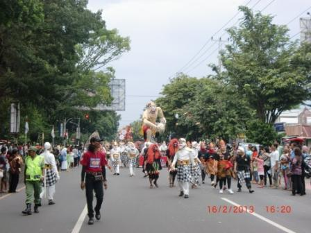

Spotlight

Selamat Datang di Website Kelurahan
Manahan merupakan sebuah kelurahan di kecamatan Banjarsari, Surakarta. Kelurahan ini memiliki kode pos 57139.
MANAHAN adalah nama sebuah kelurahan di Kota Solo. Lokasinya di bagian barat laut kota. Di bagian wilayah kota ini terdapat berbagai unsur kota yang penting seperti: lapangan, perumahan, sekolah, tempat ibadah, bangunan industri, ruang terbuka hijau, prasarana jalan kereta api, jalan raya dengan deretan pohon cemara di pinggirnya, dan tempat-tempat bersejarah termasuk Gedung SMT Manahan kita.
16 Februari 2013
Senam Bersama Menyambut HUT RI-79
Dalam rangka menyambut Hari Ulang Tahun Republik Indonesia (HUT RI) yang ke-79, Kelurahan Manahan menyelenggarakan kegiatan senam bersama yang diikuti oleh seluruh struktur organisasi kelurahan. Kegiatan ini juga dimeriahkan dengan kehadiran mahasiswa Kuliah Kerja Nyata (KKN) dari Universitas Sebelas Maret (UNS) yang tergabung dalam kelompok 252 dan 253. Senam bersama ini dilaksanakan di halaman kantor kelurahan dengan suasana yang penuh semangat dan kekompakan.
Acara dimulai sejak pagi hari dengan antusiasme tinggi dari para peserta, yang terdiri dari perangkat kelurahan, tokoh masyarakat, dan mahasiswa KKN. Kegiatan ini tidak hanya bertujuan untuk meningkatkan kesehatan dan kebugaran jasmani, tetapi juga sebagai momen untuk mempererat tali silaturahmi dan kerjasama antara perangkat kelurahan dan mahasiswa KKN UNS.
Senam bersama ini menjadi salah satu rangkaian acara dalam rangkaian perayaan HUT RI yang ke-79 di Kelurahan Manahan. Kehadiran mahasiswa KKN dari kelompok 252 dan 253 memberikan nuansa segar dan energi baru dalam setiap gerakan senam yang dipandu oleh instruktur berpengalaman. Selain itu, kegiatan ini juga menjadi ajang bagi mahasiswa KKN untuk berinteraksi lebih dekat dengan masyarakat dan memahami dinamika sosial di lingkungan kelurahan.
Setelah senam bersama, acara dilanjutkan dengan beberapa sesi permainan dan lomba ringan yang turut diikuti oleh seluruh peserta, semakin menambah keceriaan dan semangat kebersamaan dalam menyambut peringatan hari kemerdekaan. Partisipasi aktif dari semua pihak dalam kegiatan ini diharapkan dapat menjadi contoh sinergi yang baik dalam membangun solidaritas dan rasa cinta tanah air, sekaligus memperkuat komitmen bersama dalam menyukseskan program-program kelurahan dan kegiatan KKN di masa mendatang.
30 Juli 2024
Kerja Bakti Menyambut HUT Ibukuwarnasari
Dalam rangka menyambut Hari Ulang Tahun (HUT) Ibukuwarnasari, diadakan kegiatan kerja bakti membersihkan area Ibukuwarnasari yang merupakan kawasan Usaha Mikro, Kecil, dan Menengah (UMKM) di Kelurahan Manahan, tepatnya di Bendungan Tirtonadi. Kerja bakti ini diikuti oleh seluruh struktur Kelurahan Manahan dan diramaikan oleh mahasiswa Kuliah Kerja Nyata (KKN) dari Universitas Sebelas Maret (UNS) dan Universitas Diponegoro (UNDIP). Kegiatan ini bertujuan untuk mempercantik area Ibukuwarnasari, sekaligus memperkuat sinergi antara masyarakat, pemerintah kelurahan, dan mahasiswa dalam memajukan potensi UMKM setempat. Kehadiran mahasiswa KKN juga diharapkan dapat memberikan kontribusi positif dalam mempersiapkan perayaan HUT Ibukuwarnasari.
30 Juli 2024
Apel Pagi Rutin Kelurahan Manahan
Pelaksanaan apel rutin struktur organisasi dilaksanakan secara teratur setiap hari Selasa hingga Kamis dengan pendampingan dari mahasiswa Kuliah Kerja Nyata (KKN) Universitas Sebelas Maret (UNS) dan Universitas Diponegoro (UNDIP). Apel ini merupakan bagian dari kegiatan koordinasi dan evaluasi rutin yang diikuti oleh seluruh anggota organisasi. Kehadiran mahasiswa KKN dari kedua universitas ini bertujuan untuk memberikan pendampingan dan pengalaman praktis dalam manajemen organisasi serta pengembangan program kerja. Dukungan dari para mahasiswa ini diharapkan dapat meningkatkan efisiensi dan efektivitas pelaksanaan tugas serta pencapaian target organisasi.
30 Juli 2024
Manahan, Stadion Alternatif Pra Piala Asia
Stadion Manahan Solo rencananya akan menjadi venue untuk pra-Olimpiade atau pra-Piala Asia. Stadion ini dipilih sebagai opsi jika venue utama, Stadion Utama Gelora Bung Karno (SUGBK), tidak dapat digunakan.
SUGBK rencananya akan digunakan untuk penyelenggaraan konser pada 25 Maret 2015. Selang dua hari kemudian, tepatnya 27-31 Maret 2015, Pra Piala Asia akan digelar.
PSSI akan memberikan kepastian stadion mana yang akan digunakan sepekan jelang Pra Piala Asia dan Pra Olimpiade bergulir. Dari pihak AFC juga sudah memberikan opsi tempat jika PSSI tidak dapat memberikan venue yang sesuai.
“Kami berharap SUGBK tidak mengalami kendala lain. Kami ingin melihat secara langsung kondisi rumput dan setelah satu minggu bagaimana keadaannya,” kata Joko Driyono kepada wartawan di kantor PT Liga Jakarta, Senin (16/3/2015).
“Persiapan tanggal 25 sudah mulai pemasangan (peralatan konser). Saya membayangkan bisakah bersih dalam waktu satu hari. Kamis lalu kami juga sudah memantau Stadion Manahan ketika ada uji coba Sriwijaya,” tambahnya.
Sumber: bola.okezone.com
17 Maret 2015
Lomba Orkes keroncong Manahan Solo
Solo - Dalam rangka memperingati HUT RI ke-69 tahun 2014, Kelurahan Manahan mengadakan lomba Orkes Kroncong se-Kelurahan Manahan, dengan memperebutkan Piala Walikota. Acara ini dilaksanakan pada Kamis (21/8/2014) pukul 19.00 WIB.
Lomba tersebut diikuti oleh 4 grup kroncong. Adapun peraturan dan ketentuan lomba, salah satunya peserta harus menyanyikan 2 lagu, yaitu lagu wajib dan lagu pilihan.
Pembukaan lomba disampaikan oleh Bapak Danang Sulindriyanto, SE., MM., selaku Camat Banjarsari, karena Walikota Surakarta Bapak FX. Hadi Rudyatmo berhalangan hadir.
Dalam sambutannya, Bapak Danang Sulindriyanto mengatakan bahwa lomba ini sangat menarik, tidak hanya sebagai bagian dari perayaan kemerdekaan, tetapi juga untuk melestarikan musik keroncong yang merupakan musik asli Solo.
Dengan mengucap doa, Lomba Orkes Keroncong Kelurahan Manahan resmi digelar.
Sumber: surakarta.go.id
17 Maret 2015
Puncak Memeriahkan Kemerdekaan RI – Wayang Kulit
Kelurahan Manahan – Pada Sabtu Pahing, 31 Agustus 2014, Kelurahan Manahan mengadakan acara untuk memeriahkan kemerdekaan Indonesia. Acara tersebut berlangsung di lapangan kantor Kelurahan Manahan dan menampilkan wayang kulit yang dimulai pada pukul 21:00. Acara ini dihadiri oleh Walikota Surakarta, Bapak F.X. Hadi Rudyatmo beserta staf, serta Bapak Lurah Susanto, SE.
Dalam acara ini, juga dilaksanakan pembagian piala untuk lomba keroncong se-Kelurahan Manahan. Bapak Rudy, sapaan akrab Walikota Surakarta, memberikan sambutan dan menyerahkan piala kepada setiap pemenang lomba keroncong. Pemenang yang terdiri dari Juara I, Juara II, Juara III, Juara Harapan 1, dan Juara Harapan 2, menerima piala dan berfoto bersama Bapak Rudy dan Bapak Susanto. Setelah pembagian piala dan sambutan, acara dilanjutkan dengan pagelaran wayang kulit hingga selesai.
1 September 2014
Perawatan lapangan Manahan
Bulan Ramadan ternyata juga berdampak baik kepada rumput di Stadion Manahan, Solo.
Aktifitas sepakbola di stadion terbesar di Jawa Tengah ini untuk sementara terhenti karena Persis Solo masuk jadwal jeda kompetisi Divisi Utama di bulan Ramadan ini.
Jeda kompetisi ini dimanfaatkan pengelola Stadion Manahan untuk melakukan perawatan intensif pada rumput lapangan.
Hal ini karena kepadatan agenda sepak bola pada dalam dua bulan terakhir membuat beberapa bagian lapangan di Stadion Manahan mengalami kerusakan.
Mulai tumbuhnya rumput liar yang membuat rumput asli mati, hingga kualitas kerataan lapangan yang menurun.
“Ada sekitar 10 persen bagian lapangan yang rumputnya mati. Penyebabnya karena seringnya penggunaan lapangan dan tumbuhnya rumput liar. Waktu dua pekan akan kami optimalkan untuk perawatan, mulai dari pemupukan hingga pergantian rumput,” ujar Pengurus Rumput Stadion Manahan, Didik, beberapa waktu lalu.
Dari pengamatan di lapangan saat uji coba antara Persis Solo melawan PS Mojokerto Putra (PSMP), Jumat (27/6/2014) rumput yang bulan lalu terlihat hijau di beberapa tempat mulai menguning.
Bahkan di sisi barat, ada bagian yang tak ditumbuhi rumput. Hal ini seperti yang terjadi saat awal tahun lalu setelah Laskar Sambernyawa gencar mengadakan laga uji coba.
Saat itu, bagian yang kualitas rumputnya tak layak diganti dengan rumput merapi yang ada di belakang bench pemain.
Dengan ketebalan dan akar yang lebih kuat, rumput itu secara perlahan akan menggantikan jenis rumput dari Brasil yang selama ini digunakan.
Didik memaparkan selain mengganti rumput rusak dengan rumput di belakang bench, dirinya juga melakukan pemupukan di rumput yang menguning. “Cukup di pupuk saja, sedangkan untuk mengembalikan kerataan lapangan, kami akan menggunakan stoom khusus. Sebelum Persis mengadakan uji coba pada pertengahan bulan ramadan, lapangan sudah baik lagi,” sambungnya.
Sumber : jateng.tribunnews.com
30 Mei 2014
Timnas Indonesia U-19 vs Lebanon U-19 di Stadion Manahan Solo
Laga uji coba terakhir Garuda Muda pada bulan Mei itu akan berlangsung di Stadion Manahan Solo, Rabu (28/5/2014) malam WIB.
Panitia pelaksana pertandingan sudah membeberkan harga tiket pertandingan tersebut. Tiket termurah dijual dengan harga 30 ribu Rupiah dan yang termahal 100 ribu Rupiah.
“Penjualan tiket dilayani di tiket box di Stadion Manahan Solo pada hari Rabu, mulai pukul 14.00 WIB. Jadi tidak melayani pemesanan tiket,” jelas Ketua LOC, Azwan Karim.
Rencananya, pertandingan itu akan berlangsung pada pukul 19.00 WIB. Timnas U-19 vs Lebanon akan disiarkan secara langsung oleh SCTV.
- VIP Barat: Rp. 100.000
- Tribun Barat: Rp. 75.000
- Tribun Timur: Rp. 50.000
- Utara: Rp. 30.000
- Selatan: Rp. 30.000
30 Mei 2014
Partisipasi Kelurahan Manahan Hari Jadi Kota Solo yang ke-268
Kelurahan Manahan Ikut berpartisipasi dalam Hari Jadi Kota Solo yang ke-268, dengan karnaval wayang terdiri dari ogoh-ogoh kera putih (atau sering disebut sebagai Anoman) setinggi 5 meter dari karangtaruna Pokdarwis Kelurahan Manahan. Selain kelurahan Manahan, beberapa Kelurahan Lainnya juga ikut berpartisipasi dalam karnaval ini dengan ogoh-ogoh lainnya seperti Kelurahan Nusukan, Kelurahan Jagalan, dan sejumlah kelompok sekolah (SMA dan SMK) negeri/swasta se-Kota Solo.
Warga memadati sepanjang Jl Moewardi, Jl Slamet Riyadi dan Jl Jenderal Sudirman yang menjadi rute karnaval itu. Massa penonton terpusat di tiga titik, yakni di lapangan Kotabarat, depan Sriwedari dan di sekitar Balaikota Solo. Mereka menyaksikan iring-iringan kelompok karnaval sampai rombongan terakhir.

Para peserta karnaval begitu bersemangat untuk berjalan kaki dari Kottabarat hingga Balaikota Solo. Mereka tak menghiraukan kondisi lapangan Kottabarat yang becek setelah diguyur hujan pada pukul 14.00 WIB. Widdi Srihanto bersama para lurah dan anggota DPRD Solo ikut menikmati lapangan becek itu. Dengan konstum punakawan petruk, Widdi pun memberangkatkan rombongan karnaval.
Rombongan Walikota FX Hadi Rudyatmo yang memakai kostrum Werkudara dan Menteri Pemuda dan Olahraga (Menpora) Roy Suryo dengan pakaian setyaki mengadang karnaval di depan Loji Gandrung Solo. Sejumlah pimpinan daerah, seperti Ketua DPRD, Kapolres Solo, Dandim dan pimpinan daerah lain turut serta dalam rombongan Walikota dengan pakaian para betara atau dewa. Artis petualangan Peppy pun turut serta dalam rombongan itu. Para pejabat itu bergabung di baris terdepan karnaval wayang itu.
Sumber : solopos.com
21 Februari 2013
Pembangunan Shelter Manahan
Pemkot Surakarta dalam hal ini Dinas Pengelolaan Pasar (DPP) akan membangun shelter baru untuk Pedagang Kaki Lima (PKL) manahan di tahun 2012 ini. Rencana pembangunan tersebut akan menambahkan 41 shelter baru di sebelah timur yang diambil dari Anggaran Pendapatan Belanja Daerah (APBD). Saat ini shelter yang tersedia terdiri dari 186 shelter. Disebelah barat terdiri dari 146 shelter dan di sebelah utara stadiun tepatnya di depan FKIP Olah Raga UNS ada 40 shelter baru yang bekerjasama dengan PT. SOSRO yang diresmikan pada tahun 2011. Rencana pembangunan shelter manahan sudah masuk dalam proses lelang. Pembangunan Shelter ini diharapkan supaya Pedagang Kaki Lima (PKL) dapat tertata dengan baik dan dapat menjadi wajah kota yang indah dan tidak kumuh. sumber : surakarta.go.id
16 Februari 2013